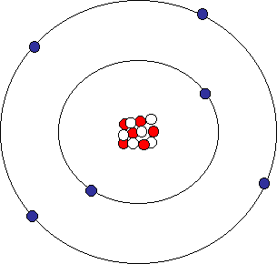

12PHYS - Electricity
Finn LeSueur
2019
Brainstorm with the people around you what you know about electricity from Year 9 and 10.
Write it on the board when ready!
Static electricity has many hilarious effects, from Tesla coils, to lightning & making your hair stand on end. But it all depends on charge!
We should all remember that, much like magnets, opposites attract and likes repel.
Recall: the atom. What element is this? What are the three subatomic particles that make it up?

Question: What happens when an atom loses or gains electrons?
Electrons are extremely light and move very fast. Therefore they can sometimes escape an atom.
What did we do in Year 10 Science to remove charges from one object and put them onto another?
We applied friction!
In Physics the symbol for charge in equations is \(q\) or \(Q\).
Unit: Coulomb (C)
We use it to describe how positive or negative an object is.
We know that electrons are negatively charged. In fact, they have a charge of \(-0.00000000000000000016 Coulomb\) also written as \(-1.6 \times 10^{-19}C\).
Therefore we can calculate that if an object has a charge of +1C, is has lost \(6,250,000,000,000,000,000\) electrons.
\(6.25 \times 10^{18} electrons = -1 C\)
\[\begin{align*} & \text{Negative C means electrons are gained (negative charge)} \\ & num_{e} = 3 \times (6.25 \times 10^{18}) \\ & num_{e} = 1.875 \times 10^{19} && \text{ electrons gained} \end{align*}\]
\[\begin{align*} & \text{Positive C means electrons are lost (positive charge)} \\ & num_{e} = 0.2 \times (6.25 \times 10^{18}) \\ & num_{e} = 1.25 \times 10^{18} && \text{ electrons lost} \end{align*}\]